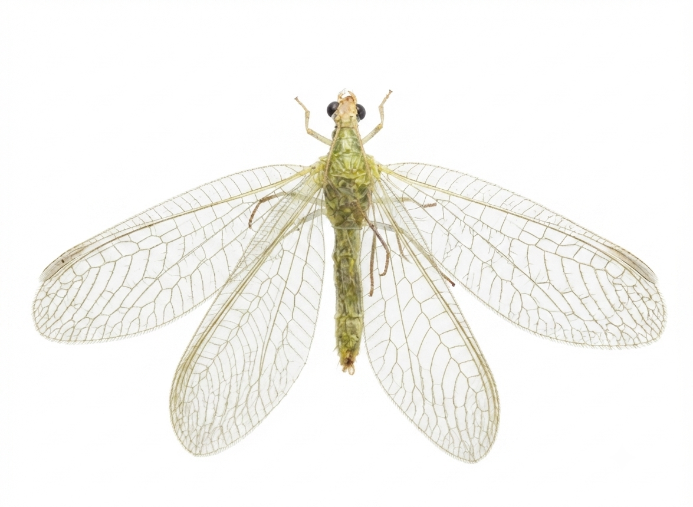

Organismos Não Alvo em Sistemas Agrícolas
Plataforma para consulta de registros taxonômicos, funcionais e fotográficos associados a diferentes culturas agrícolas.

Pesquisar registros
Use os filtros para localizar organismos por cultura, taxonomia e função ecológica.
Culturas
Selecione uma cultura para explorar seus registros.
Estatísticas e biodiversidade
Comparação geral entre culturas e indicadores exploratórios dos registros disponíveis no BioBanco.
Comparação geral entre culturas
Síntese comparativa dos 307 registros distribuídos entre as seis culturas agrícolas avaliadas.
Número de registros por cultura
Distribuição dos registros disponíveis no BioBanco.
Riqueza taxonômica operacional
Número de unidades taxonômicas operacionais (UTOs) observadas por cultura.
Composição funcional relativa (%)
Proporção de parasitoides, predadores, polinizadores e demais categorias funcionais em cada cultura.
Índices de diversidade
Comparação exploratória dos índices de Shannon, Simpson e equitabilidade de Pielou entre as seis culturas.
Detalhamento por cultura
Selecione uma cultura para consultar sua composição funcional e seus índices exploratórios.
Composição funcional
Índices de biodiversidade
Sobre o BioBanco
O BioBanco Digital de Organismos Não Alvo foi desenvolvido para organizar, padronizar e disponibilizar registros taxonômicos, ecológicos e fotográficos de organismos associados a sistemas agrícolas.
A plataforma integra imagens padronizadas, identificação taxonômica revisada e classificação funcional, apoiando estudos de biodiversidade, controle biológico, manejo integrado de pragas e conservação de organismos benéficos.